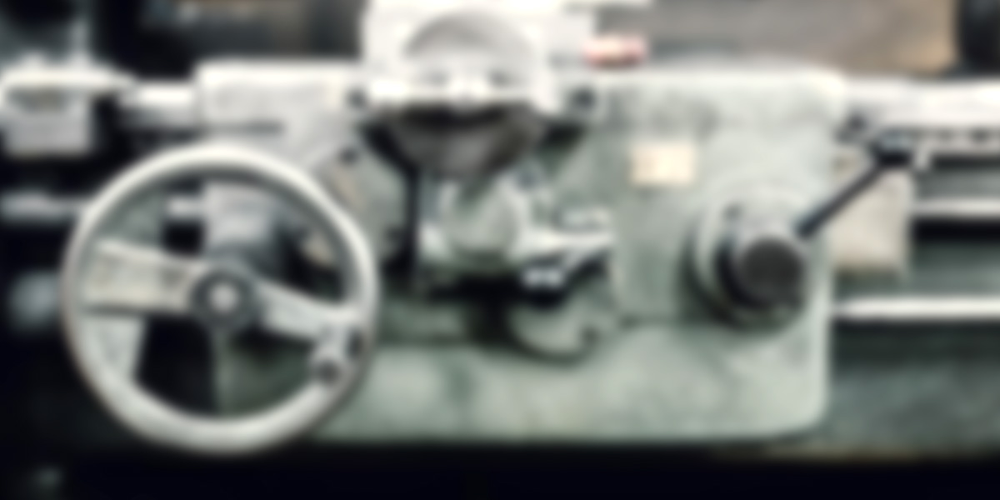

-
十条ステン工業株式会社
製造部の中心的存在で、技術のエキスパートを目指す！！
-
岡野勝利
知識・技術の向上を目標とし、創意工夫を凝らした製品作りにやりがいを感じています。


仕事内容を教えてください。
特殊製品全般の、切断、タレパン成形、曲げ加工、溶接、溶接加工・仕上げまでの流れを一貫して担当してます。
入社して自分個人の為になったなと思うとは？
忍耐力がついたと思います。十条ステンに入社したことにより、仕事に対しての意欲が高まりました。仕事をどんどん覚え、出来る様になる事が、日々の仕事の楽しさを感じられます。
仕事での楽しさと苦しさは？
自分で創意工夫しながら出来上がった製品を、お客様にみせられるところが楽しみでもあり喜びです。苦しいというのは特にありませんが、朝起きるのが早いというのが辛いです（笑）
今後の夢は？挑戦は？
現在、展開データ作成をして間もないのですが、早く技術を習得し、自分でなんとかできるようになりたいです。川瀬課長のようなエキスパートになることが目標です。
出勤する時に思うことは？
今日の仕事の内容を、通勤途中で考えながら、1日をスケジュールを立ててます。後輩が増え、今後は教える側の立場となり、作業効率を向上するためにいろいろ考えてます。
最後に一言
アットホームな会社で、皆仲良しなのが特徴です。働いていて楽しいです。
岡野勝利の1日の平均的なスケジュール
- 08:15
-
出社
みんなの元気な顔をまず確認！
- 8：25～8：30
-
ラジオ体操～朝礼
本日の作業目標を発表
- 8:30～12：10
-
午前の部
仕事の分担を終えたのち、依頼された製品の展開作業及び手配
- 12:10～13：00
-
昼休み
社内の様子を見て、改善策を練りながら社員とのコミュニケーション
- 13：00～18：05
-
午後の部
注文依頼分の作業状況を見ながら、社内現場にて特殊製品全般の製作作業
- 18：05～18：10
-
一日の作業終了。
社内清掃後、明日の予定・準備を確認。
- 18：15
-
退社
プライベート

Profiel
岡野勝利
出身地:群馬県出身
身長:159.5cm
勤続10年目になりました。
現在はAP100で、データ作成の業務を始めたばかりです。
脳みそが漏れそうですｗ
髪も減りました。(・。・)
(現在目標としていること)
☆高級シャンプーの継続使用
☆身長を伸ばす事(170ｃｍ)
☆過去にASAYANのオーディションを受けた経験があるので
今後は歌手デビューorミュージックステーション出演！
COMMENTS 社員から岡野勝利さんへのコメント
(後輩社員：Ｋより)